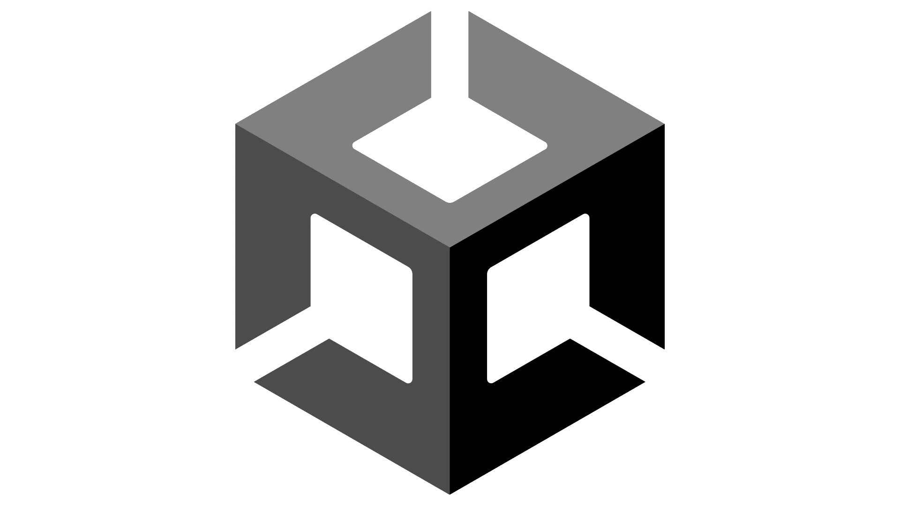

Unity
Unity is a free and open source game engine that's available to download on it's official website. Unity is a pretty standard engine in the industry particularly amongst the indie game scene.

The Good
- Unity is an industry standard, so jobs using Unity are easy to come by
- Supports both 2D and 3D
- Has a vast asset store for you to use
The Bad
- It's performance intensive and may not run well on lower end hardware
- Complex games require a lot of optimisation
- The asset store lacks in 3D polygon assets